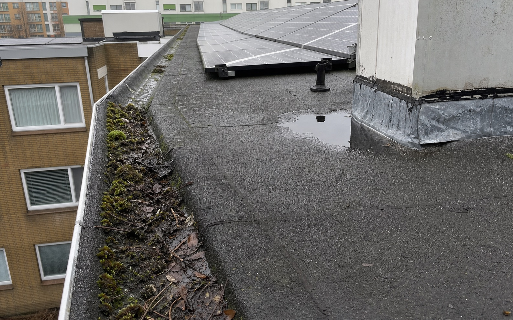
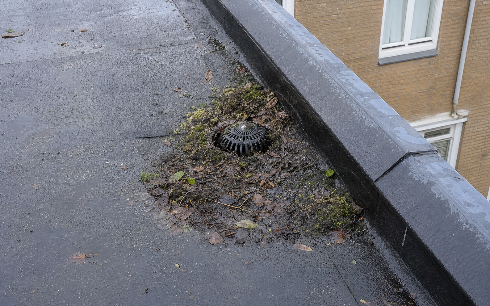
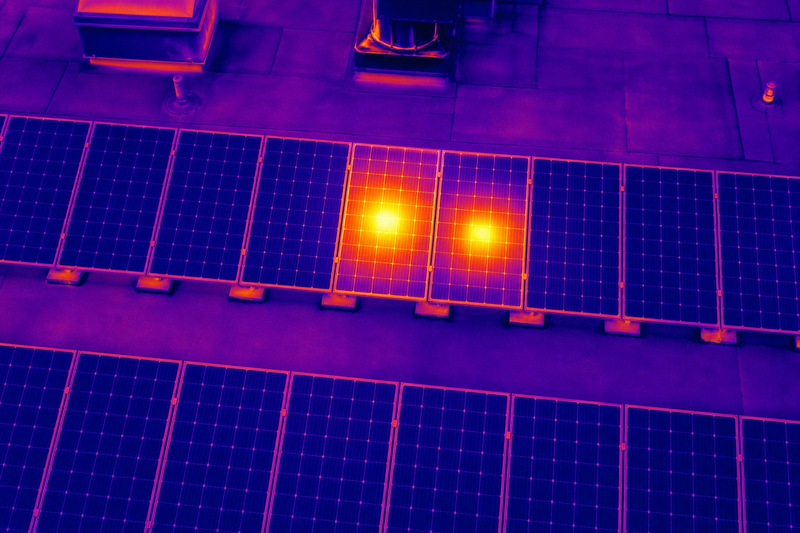
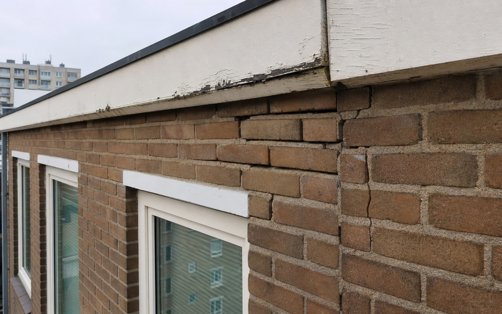

DoelOnderhoud prioriteren en offertes gerichter uitvragen
Afbakening
Dit voorbeeldrapport is opgesteld als commercieel en inhoudelijk model voor RoofSignal. Alle objectgegevens, bedragen en bevindingen zijn fictief, maar representatief voor de rapportdiepte die bij een uitgebreide inspectie kan worden geleverd.
De beoordeling is indicatief en gericht op onderhoudsbesluitvorming. Waar destructief onderzoek, constructeursoordeel, installatietechnische metingen of volledige NEN 2767-conditiemeting nodig zijn, wordt dit expliciet als vervolgstap vermeld.
Gericht onderhoud binnen drie maanden voorkomt verhoogd lekkage- en gevolgschaderisico.
Hoog risico3
Bevindingen vragen snelle opvolging.
Middelhoog5
Inplannen binnen lopende onderhoudsronde.
Monitoren4
Vastleggen en herbeoordelen.
Akkoord8
Geen directe actie op basis van opname.
Conclusie
De hoofdconstructie toont geen zichtbare acute faalindicatie, maar meerdere details rond dakranden, loodwerk, hemelwaterafvoer en gevelvoegen vragen opvolging. De combinatie van los loodwerk, vervuilde afvoerpunten en thermische afwijking bij twee zonnepanelen verhoogt het risico op lekkage, gevolgschade en discussie over onderhoudsverantwoordelijkheid.
RoofSignal adviseert om de drie P1-bevindingen binnen 30 dagen te laten beoordelen of herstellen door een specialist, de P2-bevindingen mee te nemen in de eerstvolgende onderhoudsronde en de overige punten op te nemen in het onderhoudsdossier.
Besluitadvies
Vraag gerichte hersteloffertes uit voor P1 en P2.
Reserveer budget voor dakrand- en voegwerkherstel.
Plan herinspectie na herstel of binnen 12 maanden.
Overzicht van zichtbare aandachtspunten per bouwdeel.

Voorbeeld van een dronebeeld zoals dit in een RoofSignal-rapport wordt gebruikt: het beeld toont dezelfde bouwdelen en risico's als de bijbehorende bevindingen.
Observaties dakvlak
Lokale vervuiling bij hemelwaterafvoer en gootzone.
Onregelmatig looddetail bij dakopstand zuidwest.
Beperkte plasvorming nabij installatievoet.
Zonnepaneelrij visueel intact, maar thermische afwijking gedetecteerd.
Detailbeeld RS-01: het lood sluit zichtbaar niet vlak aan op de opstand.
Analyse: Het looddetail sluit plaatselijk niet vlak aan op de opstand. Bij windbelasting en slagregen kan water achter het detail komen.
Risico: Lekkage, natte isolatie, gevolgschade aan afwerking en discussie met bewoners.
Advies: Laat het loodwerk controleren en herstellen door een dak- of loodspecialist. Controleer aansluitend op vochtsporen aan binnenzijde.
KostenindicatieEUR 650 - EUR 1.400
Afhankelijk van bereikbaarheid, steiger/hoogwerker en lengte van het te herstellen detail.
RS-02 - HWA noordzijde
Hemelwaterafvoer deels vervuild en slecht doorstromend.
P1 hoog

Vervuilde HWA
Detailbeeld RS-02: blad, slib en mos concentreren zich rond het afvoerpunt.
Analyse: Blad, slib en mosvorming concentreren zich rond het afvoerpunt. Bij piekbelasting kan waterstand op het dakvlak oplopen.
Risico: Wateraccumulatie, lekkage langs opstanden en versnelde veroudering van dakbedekking.
Advies: Reinig afvoerpunt, controleer doorstroming en leg periodieke gootreiniging vast.
KostenindicatieEUR 250 - EUR 650
Reiniging en controle, exclusief herstel bij verborgen schade.
RS-03 - PV-installatie dakvlak
Thermische hotspot zichtbaar op twee panelen.
P1 hoog

Hotspot 1Hotspot 2
Thermografisch detailbeeld RS-03: twee panelen tonen een afwijkend warmtepatroon.
Analyse: De warmtebeeldopname toont afwijkende temperatuurzones op twee panelen in dezelfde string. Dit kan wijzen op celdefect, vervuiling, connectorprobleem of beschaduwing.
Risico: Opbrengstverlies en mogelijk verhoogd elektrisch risico.
Advies: Laat de installatie controleren door een PV-specialist en vergelijk met omvormerdata.
KostenindicatieEUR 350 - EUR 1.250
Afhankelijk van diagnose, paneelvervanging en bereikbaarheid.
Geveldetails vragen onderhoud, maar tonen geen acuut constructief signaal.

Open voegwerkScheur metselwerkBoeiboord schade
Gevelbeeld met concrete schadepunten die terugkomen in de bevindingentabel.
ID
Bouwdeel
Bevinding
Prioriteit
Advies
RS-04
Voegwerk westgevel
Open en uitgewassen voegen rond latei.
P2
Herstel voegwerk meenemen in onderhoudsronde.
RS-05
Metselwerk hoekzone
Haarscheur zichtbaar, geen duidelijke verplaatsing.
P3
Monitoren en bij groei specialistisch beoordelen.
RS-06
Boeiboord dakrand
Verkleuring en beginnende houtrotindicatie.
P2
Openen, herstellen en schildercyclus actualiseren.
RS-07
Lekdorpel kozijn
Vervuilingsspoor door waterloop.
P3
Reinigen en afschot controleren.
Geveladvies
Bundel voegwerk, boeiboordherstel en schilderwerk waar mogelijk in een gezamenlijke onderhoudsopdracht. Dit beperkt bereikbaarheidkosten en voorkomt dat kleine bouwdeelproblemen los blijven liggen.
Thermografie ondersteunt de prioritering, maar vervangt geen installatietechnische diagnose.
Hotspot paneel 17Hotspot paneel 18
Voorbeeld van een warmtebeeldopname: de twee hotspots sluiten aan op bevinding RS-03.
Meetcontext
Weer
Bewolkt met tijdelijke opklaringen
Wind
Matig
Indicatie
Afwijkende hotspot op twee panelen
Beperking
Geen elektrische meting uitgevoerd
Interpretatie
De afwijking is voldoende concreet om nadere controle te rechtvaardigen. Mogelijke oorzaken zijn celdefect, vervuiling, connectorprobleem, partiele beschaduwing of bypass-diodegedrag.
Vervolgactie
Laat een PV-specialist omvormerdata, stringwaarden en visuele paneelstaat beoordelen. Documenteer de uitkomst in het onderhoudsdossier.
Offertes voor voegwerk en boeiboordherstel opvragen
RS-04, RS-06
Bundelen in onderhoudsronde.
Beheerder
3-6 maanden
Uitvoering P2-onderhoud plannen
RS-04, RS-06, RS-08
Voorkomen van verdere degradatie.
Bestuur / eigenaar
6-12 maanden
Herinspectie of dossierupdate
RS-05, RS-07, RS-09
Trend opbouwen en beslissen op basis van verandering.
RoofSignal / beheerder
MJOP-input
Dakranddetails opnemen als kortetermijnpost.
Voegwerk westgevel reserveren binnen 1-2 jaar.
Schilder- en houtwerkcyclus toetsen aan zichtbare conditie.
PV-onderhoud en monitoring expliciet opnemen.
Offerte-uitvraag
Gebruik de bevinding-ID's, foto's en prioriteiten om offertes vergelijkbaar te maken. Vraag aannemers expliciet om onderscheid tussen herstel, preventief onderhoud en aanvullend onderzoek.
Bedragen zijn geen aannemersofferte. Ze zijn bedoeld om orde van grootte, urgentie en budgetgesprek te ondersteunen. Bereikbaarheid, steigerwerk, materiaalkeuze en verborgen schade kunnen sterk afwijken.
Advies aan beheerder
Vraag minimaal twee vergelijkbare offertes uit voor de P1/P2-posten en laat de aannemer per bevinding-ID reageren. Zo blijft besluitvorming navolgbaar.
Akkoord: geen directe actie op basis van zichtbare opname.
Beperkingen
Geen destructief onderzoek uitgevoerd.
Geen constructeursoordeel.
Geen volledige installatietechnische keuring.
Weer, bereikbaarheid en zichtlijnen kunnen opname beperken.
Aanbevolen vervolg
Plan herstel van P1-bevindingen, vraag offertes uit op basis van bevinding-ID's en laat uitgevoerde werkzaamheden terugkoppelen in het dossier. Daarmee ontstaat een controleerbare onderhoudsgeschiedenis.
Opgesteld doorRoofSignal
Gecertificeerd dronepiloot A1/A3 + A2, VCA-gecertificeerd, thermografie gecertificeerd, kennis van NEN 2767-conditiedenken.
Contact
info@roofsignal.nl - 085 21 28 019 - Apeldoorn, Nederland